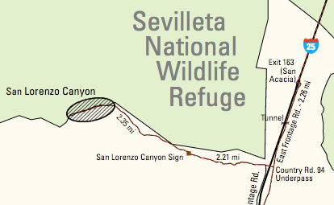

Hike New Mexico
w/ Tom & Ken
San Lorenzo Canyon
| Difficulty | Round-trip | Type | Elev. Chg. | Exposure | Wow Factor | Facilities | Seasons | Photos | By Car |
|---|---|---|---|---|---|---|---|---|---|
| Medium | 2 miles | Out-and-back | 100 ft | Full sun | Geology | None | All |
 |
 |



- Mar 8, 2015: The first sign of formations when driving in
- May 18, 2011: Along the trail there is time to enjoy
- May 18, 2011: A place where there is shade
- May 20, 2011: After a short climb, a nice view
- Mar 8, 2015: All kinds of interesting formations
- May 18, 2011: A rich variety of formations in the park
- Mar 8, 2015: Driving in also affords great views
- https://www.flickr.com/photos/139088815@N08/26793841123/in/album-72157669105693376
- https://www.flickr.com/photos/139088815@N08/27401049675/in/album-72157669105693376
- https://www.flickr.com/photos/139088815@N08/26793810833/in/album-72157669105693376
- https://www.flickr.com/photos/139088815@N08/26792995944/in/album-72157669105693376
- https://www.flickr.com/photos/139088815@N08/27329866481/in/album-72157669105693376
- https://www.flickr.com/photos/139088815@N08/27125220720/in/album-72157669105693376
- https://www.flickr.com/photos/139088815@N08/26793031984/in/album-72157669105693376
San Lorenzo Canyon is not-widely-known (outside of the locals) and comprises a large area of interesting geological formations. While there are a few trails, they are not named or otherwise classified, and exploration is up to the visitor. Trails are relatively short but provide some close-up views of unique rock formations, as well as a few nice vistas along the higher portions of some of the trails. Directions can be tricky so be sure to use care in following them.